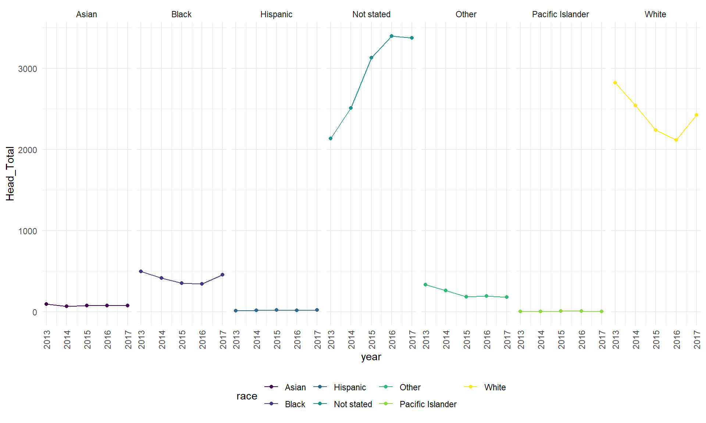

race_headdf=
race_head %>%
filter(body_part %in% c ("Head", "Face", "Neck", "Ear", "Eyeball"),
disposition == "Admitted") %>%
separate(trmt_date, into = c("year", "month", "day"), convert = TRUE) %>%
group_by (body_part) %>%
count(race) %>%
arrange(race) %>%
pivot_wider(
names_from = "race",
values_from = "n") %>%
knitr::kable(digits = 2)
race_headdf| body_part | Asian | Black | Hispanic | Not stated | Other | Pacific Islander | White |
|---|---|---|---|---|---|---|---|
| Ear | 1 | 19 | 1 | 71 | 14 | 1 | 66 |
| Eyeball | 3 | 50 | NA | 210 | 38 | NA | 140 |
| Face | 88 | 655 | 23 | 2729 | 310 | 1 | 2722 |
| Head | 381 | 2059 | 86 | 14549 | 1149 | 18 | 12138 |
| Neck | 31 | 212 | 9 | 1464 | 65 | 1 | 1336 |
From the table above, we observe that the Head injuries are the most predominant form of injury in the head and neck area, and the largest number of head injuries were observed in "Not Stated," "White," followed by "Black" race categories. It would be helpful to get a sense of how these head injuries have varied over the 4 years, in each race group.
race_head %>%
filter(body_part %in% c ("Head"),
disposition == "Admitted") %>%
separate(trmt_date, into = c("year", "month", "day"), convert = TRUE) %>%
select (-month, -day, -race_other, -disposition, -prod1, -prod2) %>%
group_by(body_part, race, year) %>%
count(body_part, name = "Head_Total") %>%
ggplot(aes(x = year, y = Head_Total, color=race)) +
geom_line()+
geom_point()+
facet_grid(~ race)+
theme(axis.text.x = element_text(angle = 90, vjust = 0.5, hjust = 1))
From graph above, we observe that the total number of head injuries have stayed lower at a consistent rate between 2013-2017 in race groups Asian, Black, Hispanic, Other, and Pacific Islander. In the "Not Stated" or Not disclosed race category, the total number of head injuries has been rising steadily from 2013 to 2016 until plateauing in 2017. For the White race cateogry, the total number of head injuries have been declining at a constant rate between 2013 to 2016, and rose from 2016 to 2017. Further categorization and identification of the individuals in the "Not Stated" race group will be important to understand why there was a higher observed prevalence of head injuries and why it continued to rise in this 5 year time period.